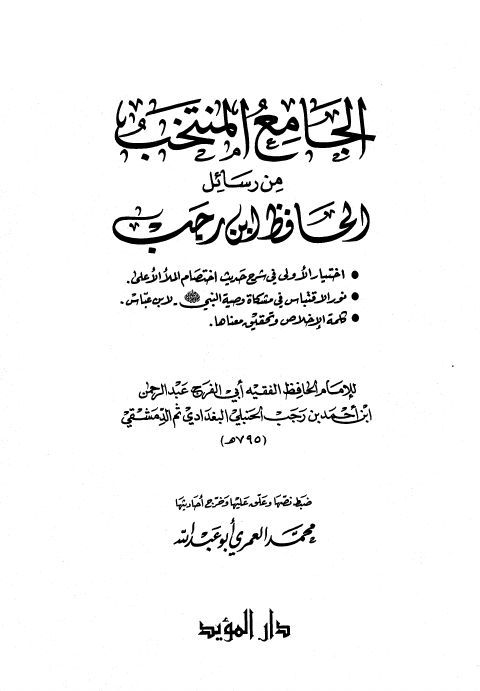

Downloads need an internet connection.
الجامع المنتخب من رسائل الحافظ ابن رجب
Authors: ابن رجب الحنبلي
Editors: محمد العمري أبو عبد الله
Publishers: دار المؤيد
**▫️ العنوان: الجامع المنتخب من رسائل الحافظ ابن رجب** ▪️ المؤلف: #عبد_الرحمن_بن_أحمد_بن_رجب_الحنبلي ▫️ المحقق: #محمد_العمري_أبو_عبد_الله ▪️ الناشر: #دار_المؤيد ▫️ تاريخ النشر: 1418هـ 1998م ▪️ بلد النشر: الرياض، #السعودية ▫️ الطبعة: 1 ▪️ عدد الأجزاء: 1 ▫️ الصفحات: 336 ▪️ نوع الوعاء: #كتاب ▫️ التصنيف الرئيسي: #الفقه_وأصوله ▪️ التصنيف الفرعي: #فقه_حنبلي ۪